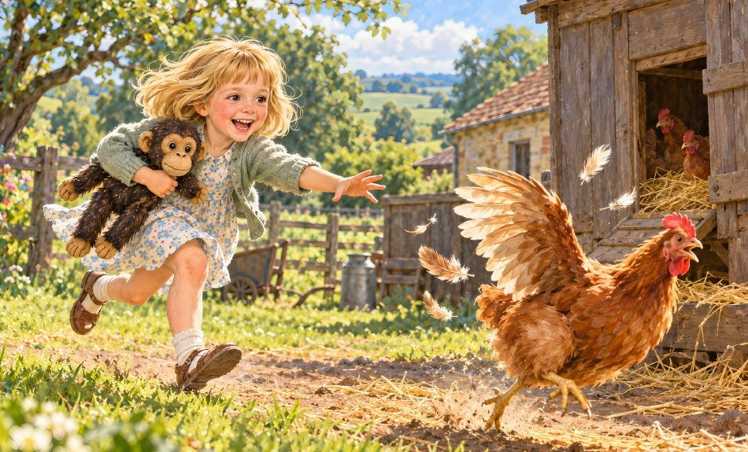

Jane Goodall
My Animal Watching Journal
When Jane was four, she waited for hours in a henhouse to see how a hen lays an egg. Later she watched wild chimpanzees, so patiently that they learned to trust her.
Wait. Watch. Wonder.
Before you watch
- I sit very still and quiet.
- I watch from far away.
- I never touch or feed wild animals.
- A grown-up is with me.
The three-minute sit
Sit by a window, in a garden or in a park. Colour a circle for each minute you wait and watch.
1 minute
2 minutes
3 minutes
The animal I watched
Date: Where:
The animal:
I gave it a name:
Jane gave the chimpanzees names, like David Greybeard. What will you call your animal?
For grown-ups: birds, snails, ants, ducks or a pet all work well. Say “Wait. Watch. Wonder.” together before you start: it helps children slow down and notice more.
Free printable from tarkasatales.com · Goes with Jane Goodall: The Girl Who Learned to Wait© 2026 Saurabh Vig